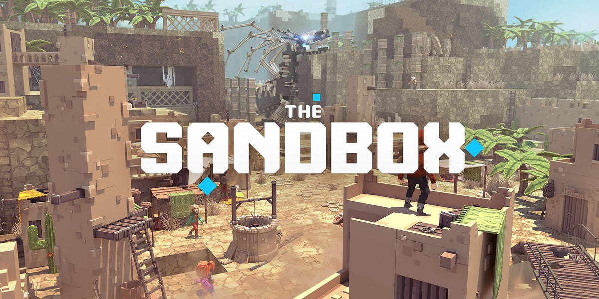

Sandbox games are a type of video game, usually with a large game map, strong interaction with NPCs or the environment, and a lot of content.
The high degree of freedom is the biggest selling point of sandbox games, which can explore, create and change the content of the game relatively freely. Non-linear games often have linear-mode plots to choose from, but generally do not force players to complete specified tasks or goals.
Some common sandbox games:
- Minecraft.
- Grand Theft Auto V.
- Hitman.
- Scrap Mechanic.
- Elite Dangerous.
- Kerbal Space Program.
- Arma 3.
- Just Cause 3.